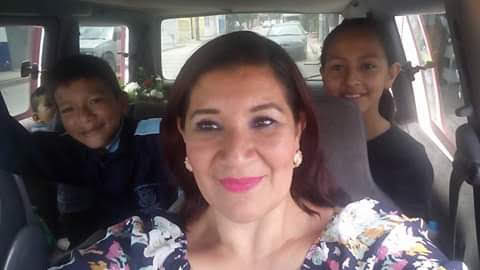
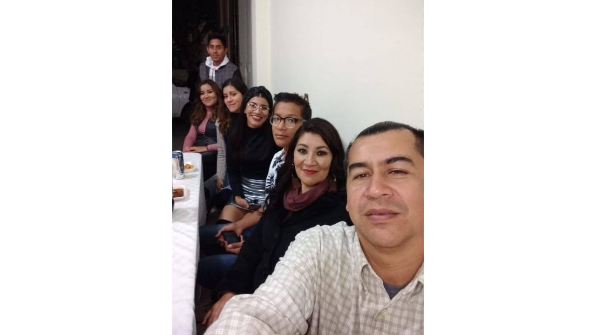

Introduccion
Le pido por favor que vea toda la página. Sé que no es toda mi historia ni me podrá conocer con algo tan simple como una autobiografía. Después de todo, esto solo es un texto, uno que crecerá y cambiará con el tiempo y también uno con el que no me puedo expresar, pero al menos tendrá una idea de lo que quiero lograr. Me gusta el arte y la animación, la poesía y el autoconocimiento, y aunque cueste y no sea capaz aún, algún día podré crear algo que pueda transmitir mis sentimientos sin necesidad de contar mi historia, porque eso es algo que solo es para mí y es algo que solo yo quiero saber: mis dificultades, luchas internas. Pero me gustaría poder crear algo con lo que una persona lo vea y escuche y pueda sentir lo que quiero transmitir, y algún día lo lograré. Así que, si es mucho texto, le pido perdón.
Aunque no tengo muchos recuerdos de mi niñez, recuerdos como me gustaría, puedo afirmar que, pese a que no todos fueron gratificantes ni positivos, gracias a estos primeros años desarrollé un deseo que hasta el día de hoy me gustaría cumplir. Quiero empezar por mi familia: mi madre se llama "Ma. Guadalupe Zúñiga Murillo", y mi padre "Sergio Enrique Bermúdez Olvera", además de mis 3 hermanas llamadas "Priscila María Guadalupe Bermúdez Zúñiga", siendo la mayor de todos "Jessica Abigail Bermúdez Zúñiga", es mi segunda hermana mayor seguida de "Andrea Margarita Bermúdez Zúñiga", y por último yo, Luis Enrique. Debo decir que trataré de colocar algunas imágenes, pero debido a que no me gusta mucho que me fotografíen desde pequeño, no tengo muchas fotos sobre mí.
 Niñez
Recuerdo que una vez que los reyes magos me trajeron una bicicleta con rueditas y mis padres me sacaron al parque a dar una vuelta, literalmente porque rompí las llantitas y me caí, tengo recuerdos gratos, pero también se me enseñó a aparentar que siempre estaba bien y no demostrar mis sentimientos realmente, lo cual con el tiempo ocasionó problemas emocionales. Mi niñez se caracterizó por buenos momentos y malos también, pero recuerdo que realmente me apasionaba la veterinaria y los animales, leí cada enciclopedia de mi casa sobre zoología y un libro de medicina veterinaria, podía identificar cualquier raza de perro con solo verlos, identificár animales salvajes y, entre más veía en la televisión sobre animales, realmente lo amaba, en especial los documentales, aunque no pude ser veterinario hasta el día de hoy, recuerdo e identifico algunas razas de perros y puedo identificar animales salvajes. hay mas en los otros vinculos solo debe seleccionar secundaria o bachiller para leer mas
| Etapa | Promedio |
|---|---|
| Primaria | 7.8 |
| Secundaria | 8.2 |
| Bachiller | 8.9 |
| Universidad (actual) | 8.0 |